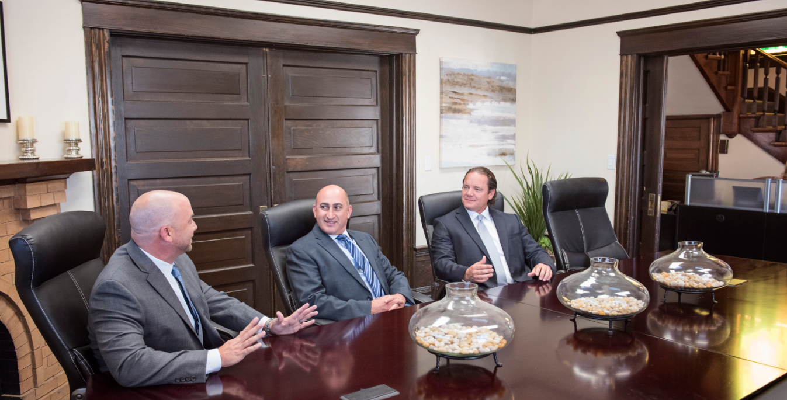

Fresno Counsel For Roadway Negligence
When a traffic collision raises questions about responsibility, early legal guidance can help a person understand available options without navigating insurers alone. A consultation with Fresno Car Accident Lawyer may clarify which parties could be involved, what forms of compensation may be available, and how the process is likely to proceed. Working with Fresno Car Accident Lawyer can also make it easier to respond consistently to requests for information and evaluate proposed resolutions.
A legal review may consider applicable traffic rules, insurance coverage, and the relationships among the people or businesses connected to the event. With assistance from Fresno Car Accident Lawyer, a client can examine whether comparative responsibility, employer liability, or a defective vehicle component affects the analysis. A focused review by Fresno Car Accident Lawyer may also bring in qualified specialists when technical questions require additional insight, helping distinguish established facts from assumptions.
If direct discussions do not lead to a satisfactory result, mediation or a court proceeding may offer additional avenues for resolution. By consulting Fresno Car Accident Lawyer, a client can learn about the advantages and risks of each path, potential costs, and ways to assess settlement terms against the objectives of the case. Regular updates and clear agreements about representation support informed decisions from the initial consultation through final resolution.

Counsel For Conflicting Crash Accounts
The usefulness of information from a roadway event often depends on its origin and the circumstances in which it was preserved. Original files are generally more useful than screenshots, and their creation dates can matter when the material is examined. A conversation with Fresno Car Accident Lawyer can help establish a careful communications strategy from the outset. An assessment by Fresno Car Accident Lawyer may also identify materials that should be requested before they are overwritten, altered, or discarded.
Statements deserve careful analysis rather than an assessment based only on confidence or repetition. A person may have had limited visibility, experienced a distorted sense of time, or used imprecise language, while a later retelling may reflect ordinary memory changes instead of deliberate dishonesty. A qualified Fresno Car Accident Lawyer can help distinguish a meaningful inconsistency from a difference in interpretation. With guidance from Fresno Car Accident Lawyer, future interviews or formal discussions can be planned around precise questions and verifiable points. Keeping communications factual and avoiding speculation can reduce the risk that a casual remark will be taken out of context.
The value of objective material often depends on clear sourcing and careful handling. Retaining an original digital file and its metadata can make later review more reliable, while formal requests may be needed for records held by another person or organization. Fresno Car Accident Lawyer can help present the material accurately and in context while acknowledging gaps and avoiding claims that any single item proves more than it does. This disciplined approach supports credibility and leaves room for facts that emerge later.
Fresno Counsel For Catastrophic Harm
After a major traffic incident, the legal path can involve unfamiliar terminology, strict procedural requirements, and decisions that deserve careful attention. Fresno Car Accident Lawyer may explain how applicable rules relate to the circumstances, while Fresno Car Accident Lawyer can help a person understand the roles of negotiation, mediation, and courtroom litigation. A measured approach allows important choices to be made with a clear view of obligations, potential obstacles, and the level of participation expected at each stage.
Representation also calls for practical planning beyond the immediate legal questions. Fresno Car Accident Lawyer can assess whether outside experts, independent review, or specialized research may be useful, while Fresno Car Accident Lawyer may help organize the sequence of formal steps required by the matter. Understanding who handles each task can reduce duplication, promote accountability, and keep the work focused on issues that genuinely require attention.
Before choosing a representative, consider experience with complex litigation, professional availability, fee terms, and the resources used to prepare a matter for formal review. Fresno Car Accident Lawyer may provide a structured point of contact for questions about filings, negotiations, and hearings, but the right fit should also include respectful treatment and candid explanations. A clear working relationship can make a demanding legal matter easier to navigate without promising a particular result.
Fowler Helsel Vogt Injury Lawyers
Fowler Helsel Vogt Injury Lawyers
1705 L Street, Fresno, CA 93721 (the site also lists a second office at 2201 Mount Vernon Ave, Bakersfield, CA 93306)
(559) 398-7386